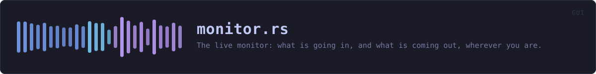

crates/veilvoice-gui/src/monitor.rs
veilvoice-gui · 414 lines · read the source here · or on GitHub
The live monitor: what is going in, and what is coming out, wherever you are.
Why this is not just the meters on the live tab
The live tab has drawn an input and an output meter for some time, and they are the right meters. What they were not was visible: they are inside one panel, and the moment somebody switched to Group to set up an interview, or to Settings, or to Monitor, the only picture of what their microphone was doing went off screen while the audio carried on.
That is the wrong way round for this feature in particular. Live scramble is the mode where the thing being protected is happening now, in real time, and where the two questions a person actually has are "is it hearing me" and "is anything coming out". A meter you have to navigate to in order to answer them is a meter that answers them late.
So the monitor rides the window. It is on by default, it shows on every tab, and it shows exactly two things plus their state: the level going in, and the level coming out.
Two places it can sit, and one way to switch it off
Style::Toolbar docks it to the bottom of the window, where it takes a strip of height and never covers anything. Style::Overlay floats it over the panel, bottom right, for somebody who would rather keep the full height for the panel and accept that it sits on top of a corner of it. Style::Off is offered because a strip somebody does not want is a strip they will resent, and the live tab still has the full meters either way.
The overlay is deliberately not click-through and not draggable: a floating thing that moves is a floating thing somebody loses behind the window edge, and this one has a close button that sets the preference instead.
What it does not claim
It shows levels. A level is not proof that the voice is being changed: a working meter and a bypassed engine look identical, and saying so is the difference between a monitor and a reassurance. What tells you the engine is running is that the output is a voice that is not yours, which is what the preview on the live tab is for.
In plain words
A small strip along the bottom of the window showing how loud your voice is going in and how loud the veiled voice is coming out, while live scramble is running.
It follows you around the application, because the moment you want it is the moment you are doing something else and are not sure the microphone is still working.
It cannot tell you that the disguise is working. It can tell you that sound is arriving and sound is leaving, which is the thing that usually goes wrong.
WHAT THIS FILE CONTAINS
414 lines defining 9 functions (7 public), 3 types and 2 constants. Everything below is read out of the source, so it cannot disagree with the code.
The types it owns.
enum Styleline 63 — Where the monitor sits, or whether it is shown at all.struct Levelsline 137 — The smoothed levels the monitor and the live tab both draw.enum Actionline 254 — What the reader did with the monitor this frame.
What happens when it runs. These are the ways in: public, and nothing else in this file calls them, so they are what an outside caller reaches first.
Style::labelline 75 — A short name, for a picker.Style::noteline 84 — What this choice costs and buys, in the words a front end should show.Style::keyline 108 — The identifier written to the settings file.Style::from_keyline 122 — Read a style back.Levels::updateline 161 — Take a new reading.Levels::clearline 192 — Back to nothing, for when a session stops.showline 313 — Draw the monitor for this frame.
reachesrow,bar
WHAT CALLS WHAT
The functions this file defines, and the calls between them. An edge means the callee's name appears, called, inside the caller's body — a syntactic reading, not a type-resolved one.
The same graph as Mermaid source
%%{init: {"theme":"base","themeVariables":{"background":"#1a1b26","primaryColor":"#1f2335","primaryTextColor":"#c0caf5","primaryBorderColor":"#7aa2f7","secondaryColor":"#16161e","tertiaryColor":"#16161e","lineColor":"#737aa2","textColor":"#c0caf5","mainBkg":"#1f2335","nodeBorder":"#7aa2f7","clusterBkg":"#16161e","clusterBorder":"#2f3549","fontFamily":"ui-monospace, SFMono-Regular, Consolas, monospace","fontSize":"14px"}}}%%
flowchart TD
n_label(["Style::label<br/>line 75"])
n_note(["Style::note<br/>line 84"])
n_key(["Style::key<br/>line 108"])
n_from_key(["Style::from_key<br/>line 122"])
n_update(["Levels::update<br/>line 161"])
n_clear(["Levels::clear<br/>line 192"])
n_bar["bar<br/>line 203"]
n_row["row<br/>line 268"]
n_show(["show<br/>line 313"])
n_row --> n_bar
n_show --> n_row
click n_label href "https://github.com/tilas01/veilvoice/blob/main/crates/veilvoice-gui/src/monitor.rs#L75" "open the source"
click n_note href "https://github.com/tilas01/veilvoice/blob/main/crates/veilvoice-gui/src/monitor.rs#L84" "open the source"
click n_key href "https://github.com/tilas01/veilvoice/blob/main/crates/veilvoice-gui/src/monitor.rs#L108" "open the source"
click n_from_key href "https://github.com/tilas01/veilvoice/blob/main/crates/veilvoice-gui/src/monitor.rs#L122" "open the source"
click n_update href "https://github.com/tilas01/veilvoice/blob/main/crates/veilvoice-gui/src/monitor.rs#L161" "open the source"
click n_clear href "https://github.com/tilas01/veilvoice/blob/main/crates/veilvoice-gui/src/monitor.rs#L192" "open the source"
click n_bar href "https://github.com/tilas01/veilvoice/blob/main/crates/veilvoice-gui/src/monitor.rs#L203" "open the source"
click n_row href "https://github.com/tilas01/veilvoice/blob/main/crates/veilvoice-gui/src/monitor.rs#L268" "open the source"
click n_show href "https://github.com/tilas01/veilvoice/blob/main/crates/veilvoice-gui/src/monitor.rs#L313" "open the source"
classDef entry fill:#1f2335,stroke:#7aa2f7,color:#c0caf5
class n_label,n_note,n_key,n_from_key,n_update,n_clear,n_show entry
classDef helper fill:#1f2335,stroke:#bb9af7,color:#c0caf5
class n_bar,n_row helperThis site loads no third-party script, so it cannot run Mermaid; the diagram above is the same nodes and edges drawn by the generator instead. GitHub renders the source below directly.
ITEMS
| Item | Line | Documentation |
|---|---|---|
Style pub enum | 63 | Where the monitor sits, or whether it is shown at all. |
Style::label pub fn | 75 | A short name, for a picker. |
Style::note pub fn | 84 | What this choice costs and buys, in the words a front end should show. |
Style::ALL pub const | 105 | Every style, in the order a picker should offer them. |
Style::key pub fn | 108 | The identifier written to the settings file. |
Style::from_key pub fn | 122 | Read a style back. |
Levels pub struct | 137 | The smoothed levels the monitor and the live tab both draw. |
HOLD const | 157 | How long a held peak stays up before it falls back to the current level. |
Levels::update pub fn | 161 | Take a new reading. |
Levels::clear pub fn | 192 | Back to nothing, for when a session stops. |
bar fn | 203 | A compact bar, for the strip. |
Action pub enum | 254 | What the reader did with the monitor this frame. |
row fn | 268 | Draw the row itself. |
show pub fn | 313 | Draw the monitor for this frame. |